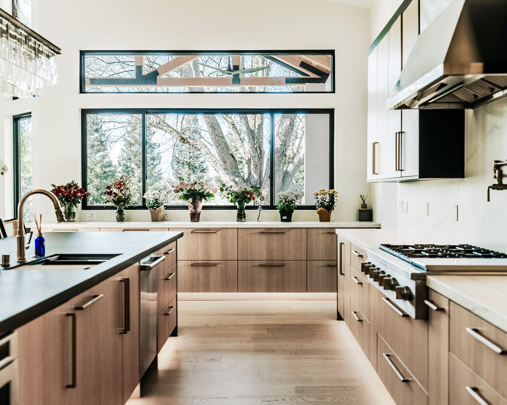
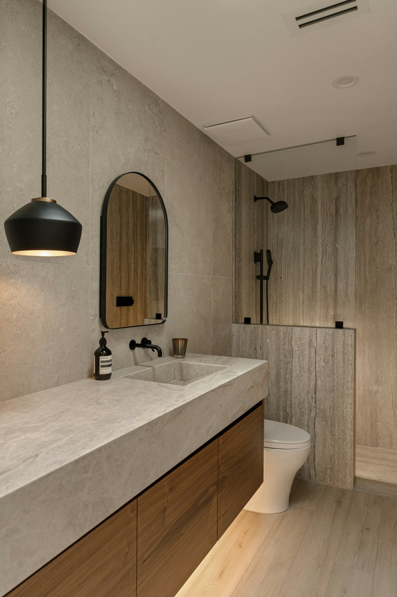
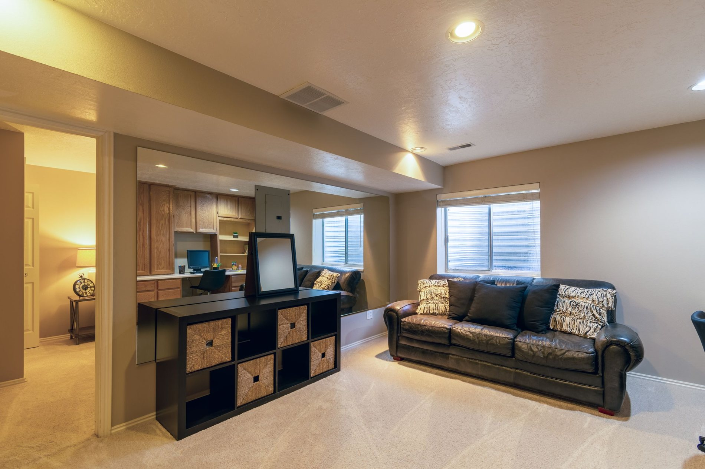

Kitchen remodel
Warm modern kitchen
A full layout and finish update focused on circulation, natural light, and useful storage.
These fictional project examples show how Rivermark would present completed work, scope, and results for a real contractor.

A full layout and finish update focused on circulation, natural light, and useful storage.

New tile, fixtures, lighting, and built-in storage brought clarity to a compact room.

An unfinished lower level became a comfortable, durable room for gathering and play.
Custom-fit cabinetry added practical storage while keeping the room visually clean.